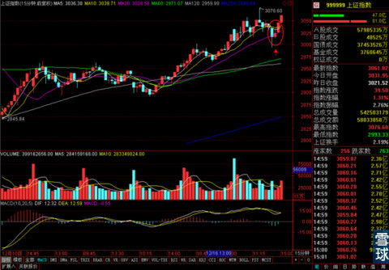
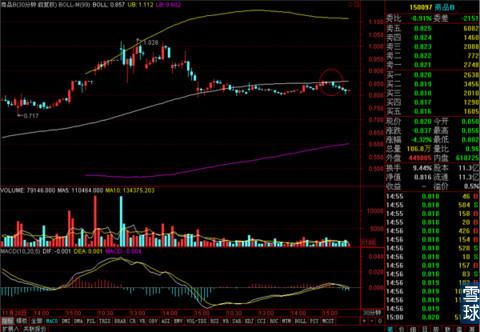
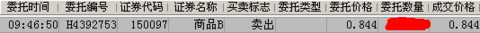
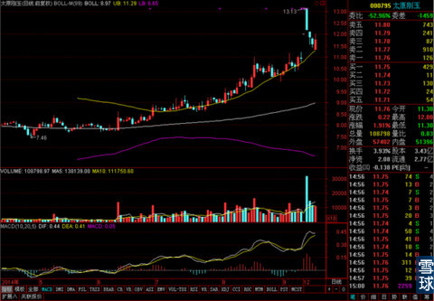
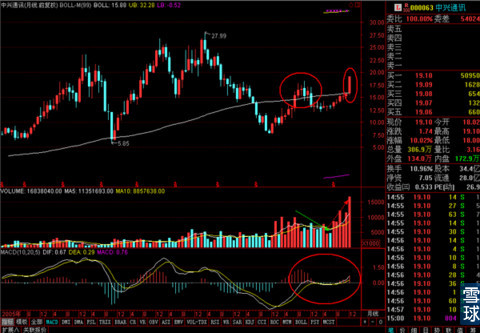
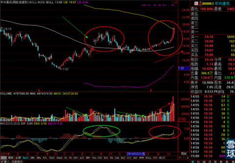
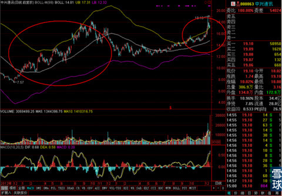
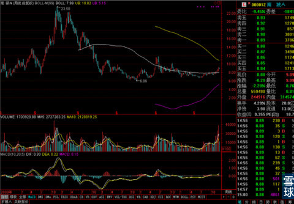
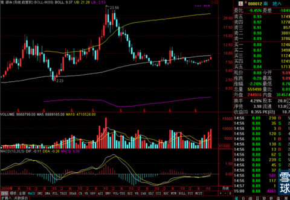

今天大盘的走势和昨天的预计比较像，不但没出现整体性的下跌，反而有所上涨，尤其是下午14：30分之后，出现了短线做价差的机会。

当指数跌破15分钟线上MA20之后又收回站稳的过程中，确定站稳之后可以买一点银华锐进或者申万进取之类的指数杠杆基金。收盘的时候就会小有盈利，明天冲高的时候卖掉就可以了。3%左右的差价应该是没有太大问题的。但是今天没做上的小伙伴明天就不要去试了。
我昨天买的商品B基金就是这样打法，观察煤炭行业发现有一定机会，于是买入，目标是30分钟线BOLL中轨，结果昨天收盘的时候，目标价不仅出现，还高出了一点点，只要今天继续站在BOLL中轨之上就可以留着，站不住就带点盈利走人。
结果今天开盘价就回到30分钟线中轨之下去了，挣扎了几次都没有效果。于是带着3%多一点点的盈利我就走了。

出手价要是在坚决一点可能会更好些，但是早上才起床，迷迷糊糊的，出得不够坚决。

另外太原刚玉在上午就差9分钱就把之前的一字板缺口补死了，我都准备缺口补死就下单出手了。结果这货还行，稳在日线BOLL上轨之上，最终缺口还没补死。

既然没有达到计划的要求，那么就暂时不出剩下的一半吧。
其它实盘股票和雪球持仓组合都没有调仓。
但是大盘虽然一直上涨，隐忧还在，那就是只有金融三剑客在拉升，而它们短期又有做小头部的迹象。其它股票几乎全线下跌。所以谁也不知道在进一步的上涨过程中，如果金融股回调了，绩优的中小盘会不会第一时间接棒，如果交接棒不流畅的话，大盘可能出现短期下挫，甚至引发较大的回调。这是很值得注意的地方。
昨天回答了一个问题，关于技术分析中价量时空关系的。
其中有一个关键点是针对时间的，在那个答案里没完全展开讲，正好今天中兴通讯涨停，是个很好的案例，借这个机会简单说一下。
所谓时间周期的共振，首先看月线

股价在月初就已经运行到了月线BOLL中轨之上的强势区，后市值得看好。成交量有温和缩量——放量过程，MACD指标也很配合。
但是相近的情况下，为什么去年那次突破月线中轨之后，走势不理想呢？
我们看看周线就知道了。

观察周线可见，上次突破月线的时候周线BOLL中轨还是向下压制的过程，成交量的缩放过程也不够温和。MACD指标在股价进入强势区不久之后就出现了顶背离走势。所以共振效果不合格。股价没有再进一步大涨。
还有比较关键的一点就是BOLL收口的情况，前一次是在没有收口的情况下发生的，所以持续性比较弱，这次是借着收口到很窄，直接就突破进超强势区域了。
而最近这次就出现了比较完美的共振。

而日线上一个是保持在强势区域，一个是在大周期最需要突破的时候股价已经突入到超强势区域。
但是值得注意的是，今天虽然涨停，但是封板不坚决，有短期派筹，滚动获利的嫌疑，后市有可能出现调整——蓄势——再上涨的走势。
当时一批选择出来的南玻A周线走势也很类似，

唯一缺憾是月线的关键点位还没有完成突破，所以短期还没有大涨。

不过南玻A还有一个优势就是总流通市值只有中兴通讯的1/4左右，所以我当时反复考虑之后敲定了南玻A，虽然短线来看中兴通讯确实是最好的选择，但是我决定还是不调仓去追了，老老实实的等着南玻A逐渐步入月线强势区之后的加速上涨出现。
所以这个时间周期的共振效果大概就是这个样子，说起来好像有点复杂，但是用得多了慢慢就适应了。
 |
今天大盘的走势和昨天的预计比较像SaiLv 2014-12-17 15:52:44 |
Copyright © 1996-2014 SINA Corporation All Rights Reserved.